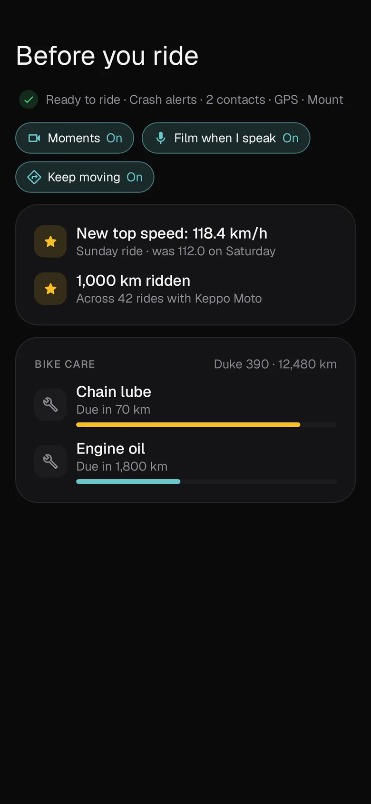
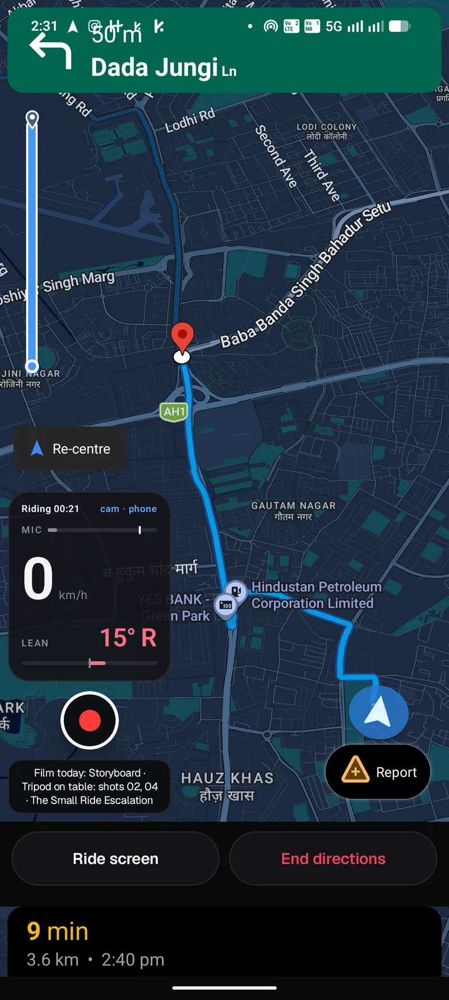

No paid server
An own route finder would cost ₹1,500–3,000 a month. I chose free: an on-phone router only if test rides show Google misses side roads.
Paid routerFree first, prove the need
"I don't really want to spend that much on a server."25 Nov
Keppo Moto keeps every ride: the route, the lean, the moments worth rewatching, and someone watching your back. I owned the product, the design and the testing on real rides in Delhi. An AI wrote the code, ran the research and built every test APK. Two months, no other team.
A rider already mounts a phone for navigation. It has a GPS, motion sensors, cameras, mics and a radio. What if it quietly did the jobs a riding crew would: keep the stats, film the good bits, watch for a fall, and cut the video afterwards, so the rider only has to ride?
Hours of helmet footage that never gets edited.
Moments films itself on hard braking, deep lean or your voice, and Studio turns them into Reels.
Riding alone, nobody knows if you go down.
Crash detection is on by default and texts your people with your location. No account needed.
Tapping a phone at 60 km/h is dangerous.
Glanceable, dark-first screens with 64 dp targets for gloves. Everything starts by itself or with one slide.
Delhi traffic: more time with a foot down than riding.
Keep moving steers around jams and learns which roads are clear for you.
It started on 25 Sep as a ride tracker: speed, lean and a route. Each layer above was added once the one below worked on real rides.
Slide to ride, a home-screen widget, a Quick Settings tile, an app shortcut or "Hey Google". A 3-second countdown with Cancel.
When a ride starts: open Maps or any app, resume your music, set the volume. On arrival: end and save the ride.
Notices a 1–15 minute stop at a pump, asks how much you filled and works out your km per litre.
Chain, oil and service due by the kilometres you actually rode, per bike.
Rookie to Legend. No speed or lean records, on purpose: the app never rewards riding faster.
Rides live on the phone. Optional backup to your own Google Drive; export to GPX, CSV or JSON.
I worked like a one-person product team. I set the direction, designed every screen and judged every build on my own bike; the AI did the engineering at the speed I needed.
Product vision and scope · the design system · every flow and screen · prototypes · what to build and in what order · ride testing in Delhi traffic · every trade-off on cost, privacy and safety.
Kotlin and Compose code · research into Google's terms and pricing · 622 tests · lint · signed test APKs · a numbered log of every question, bug and decision.
"Plan only", "don't build" and "don't make changes" mean exactly that.My rule for the AI, from the handover notes

Home, rendered from the app's own code with sample data.
I describe the problem the way a rider would, not as a spec.
"A route from A to B with zero traffic. If there's traffic ahead, take another route; left, right, U-turn doesn't matter."6 Nov, the request that became Keep moving
Delhi traffic stops bikes constantly. I wanted the app to steer around jams as they appear. Tap a step to see it.
Placeholder for the real recording. The other steps are drawn from the shipped design.
The first build had Google's banner under the status bar, a HUD covering a third of the map, three stacked bars and a detour point shown as the destination. I marked nine problems, we prototyped five options, and I chose one with rules of my own.
"A tap is both risky and not a good UI for a riding app." Every reading is visible at a glance.
Silent navigation. Warnings are an amber banner and a thin edge on the dock.
"Phone will be on the mount, just subtle visual indications."
The final dock keeps the HUD you already know: camera, GPS and ride time; the MIC, VOICE and ENGINE bars; speed, lean, gear and revs; recording controls always visible; the trip to the real destination.

Ride recording: GPS, speed, lean from the phone's sensors, and a live ride screen.
An own route finder would cost ₹1,500–3,000 a month. I chose free: an on-phone router only if test rides show Google misses side roads.
"I don't really want to spend that much on a server."25 Nov
Google's routes must sit on Google's map, and its directions can't be read aloud by our own voice. So Keep moving got its own Google map screen and uses Google's navigation, while the rest of the app keeps its own map.
Each route request costs about ₹1.3. Warnings use free traffic data, my own turns re-plan for free, and the paid switch is the last resort.
No foot down's detour search took 15 seconds. I asked to start riding while it searches; the clearer road is offered when found.
"Allow users to start riding while Google Maps looks for a perfect route."24 Nov
"Nothing behind a tap" fixed a whole class of screens at once. Clear principles travelled further than feature lists.
Five directions options cost an afternoon. The wrong build would have cost days of riding with a bad screen.
The crash and the "wrong destination" bug only showed up on a real road. Riding the build was my most valuable design tool.
149 numbered entries meant any session could pick up exactly where the last one stopped, and every choice has a reason I can show.